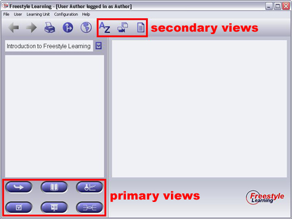

When you selected a Learning Unit from the combo box, no view managers are active. You can activate the managers integrated in your selected Learning Unit by pressing the Primary Activation Buttons on the lower left, or pressing the Secondary Activation Buttons located in the Toolbar.

Primary Activation Buttons
On the lower left you find a collection of Primary Activation Buttons. These buttons are your way to work and interact with the content provided by a Learning Unit. In most cases, these primary views will be your first steps through a Learning Unit, and you will intensively work with them to gain knowledge and use and check your abilities achieved. Which Primary Activation Buttons will appear depends upon which Views are bundled with a certain Learning Unit.
Secondary Activation Buttons
In the toolbar you find another set of activation buttons. These buttons will guide you to Learning Unit Views which provide additional material, media, notes or any other kind of content you may use for lookup or as a reference. In contrast to the Primary Views, which you will use for intensive interaction, we called these reference or collection views "Secondary Views". Which Secondary Activation Button will appear in the toolbar depends upon which Views are bundled with a certain Learning Unit.
Back to Main Help Page